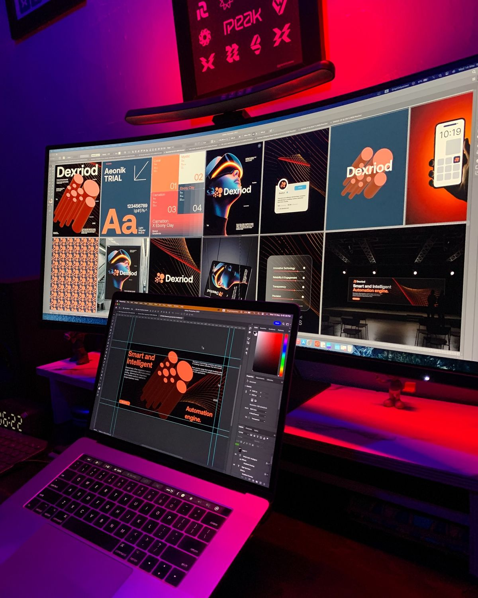

Our Academic Programs
Explore our specialized departments offering cutting-edge programs in computing and informatics.
� Software Engineering
The Software Engineering focuses on systematic design, development, testing, and maintenance of software systems. Our programs prepare students for careers in software development, project management, and systems architecture.
Key Areas of Focus:
- Software Design and Architecture
- Development Methodologies and Practices
- Quality Assurance and Testing
- Project Management and Agile Methods
- DevOps and Continuous Integration


💼 Information Technology
The Information Technology emphasizes the practical application of technology in business environments. We prepare students to design, implement, and manage IT solutions that drive organizational success.
Key Areas of Focus:
- IT Infrastructure and Systems
- Cybersecurity and Information Assurance
- Database Management Systems
- Enterprise Resource Planning
- IT Project Management
💼 Business Computing
Our Business Computing integrates technology with business principles to prepare students for the digital economy. Students learn to develop IT solutions that drive business success and innovation.
Key Areas of Focus:
- Business Information Systems
- Enterprise Resource Planning
- Digital Marketing Technologies
- E-commerce Solutions
- Business Analytics and Intelligence

🌐 Network and Administration
The Network and Administration focuses on designing, implementing, and managing computer networks and IT infrastructure. We prepare students for careers in network engineering, system administration, and IT management.
Key Areas of Focus:
- Network Design and Implementation
- System Administration and Management
- Cybersecurity and Network Security
- Cloud Computing and Infrastructure
- IT Service Management
Department Statistics
350+
Current Students
50+
Faculty Members
15+
Academic Programs
95%
Employment Rate
Department Facilities
🏢 Modern Laboratories
State-of-the-art computer labs equipped with the latest hardware and software for hands-on learning and research.
📚 Resource Center
Comprehensive library with digital resources, journals, and reference materials for computing and informatics.
🔬 Research Labs
Specialized research facilities for AI, cybersecurity, data science, and software engineering projects.